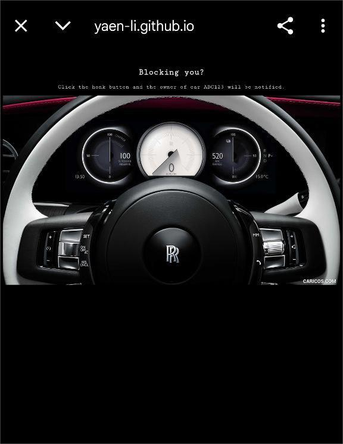
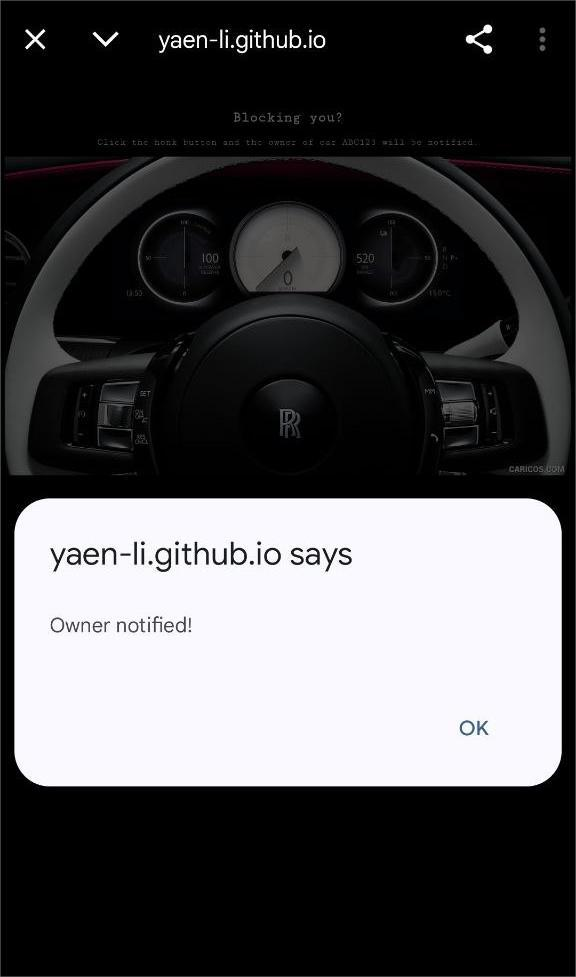
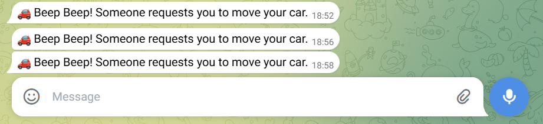

Project One
A simple Car Move Notifier which opens a simple webpage with a honk button that will notify the owner to Move Car by clicking it. Message will be received by the car owner via Telegram bot to prevent direct leaving the contact number on the car which may be abused.
Notify Successfully
Telegram message received, one per click
